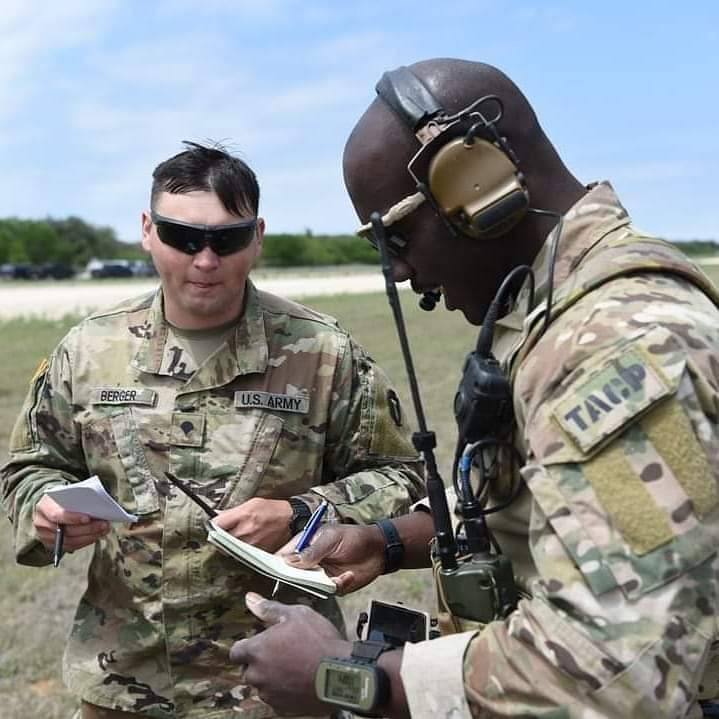
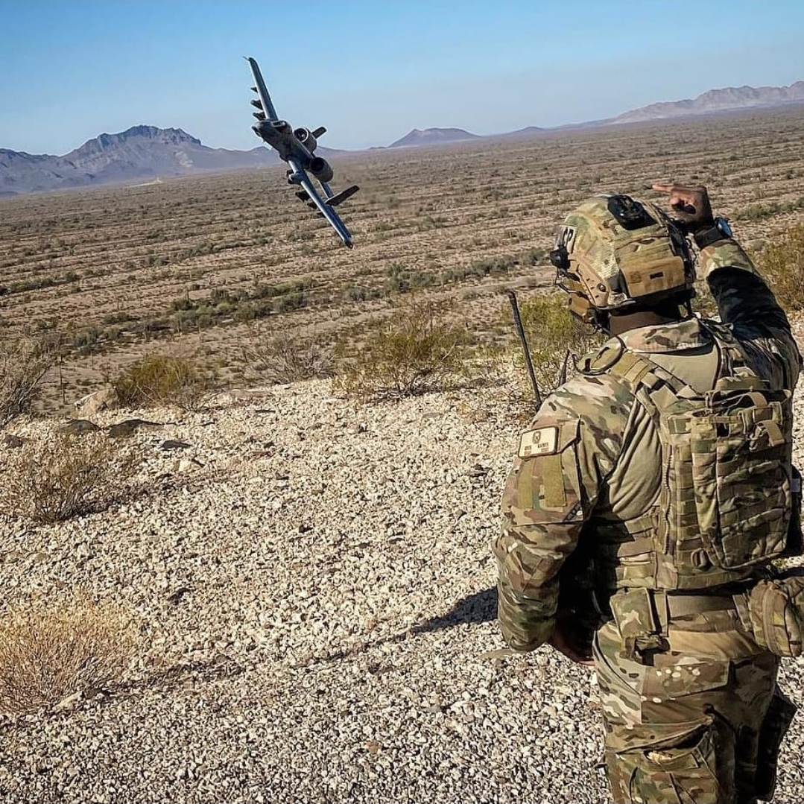
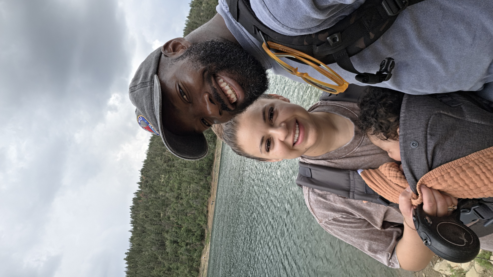
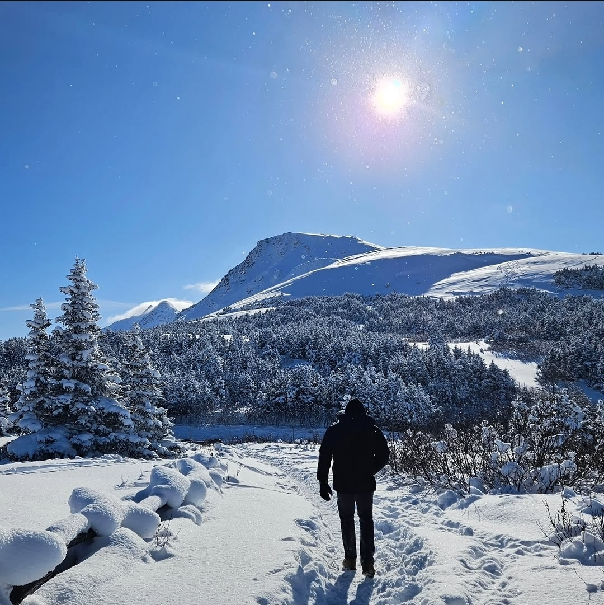
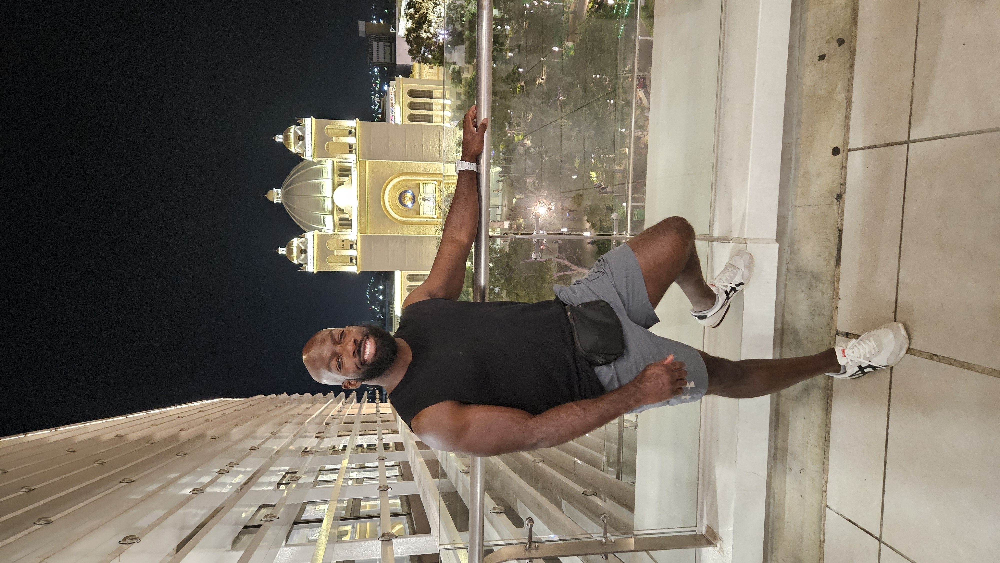

The Mission
My background is rooted in service and performance. Beginning in 2012, I served on active duty in the U.S. Air Force, and later transitioned to the Texas Air National Guard in 2018. The discipline, communication, and tactical execution required in the military serve as the foundation for how I operate in the civilian sector today.
Currently, I am pursuing my Bachelor's degree in Computer Applications at Texas Tech University. I combine this academic pursuit with my role as General Manager at Renewed Strength Fitness, where I oversee daily operations, staff coordination, and membership growth. Additionally, I operate my own online performance coaching business, TGF Performance, delivering 1:1 training and nutrition programming.


Life Outside the Gym
When I am not managing the facility, writing code, or programming workouts, I prioritize time outdoors and experiencing new environments. Whether it is hiking in the mountains or traveling internationally, I believe in continuously challenging myself physically and mentally.


